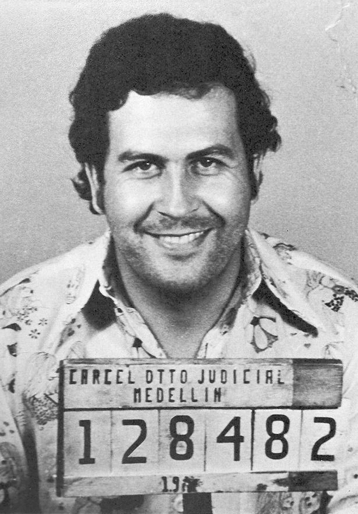

Pau Van Wemmel

Samenvatting
Ik ben een gemotiveerde en sociale professional met ruime ervaring in de horeca. Ik ben flexibel, werk goed onder druk en heb sterke communicatieve vaardigheden, waardoor ik gemakkelijk in teamverband werk en een uitstekende klantbeleving kan bieden. Daarnaast ben ik bedreven met computers en beschik ik over een solide basis in de wetenschappen door mijn studieachtergrond. Ik zoek nu naar nieuwe uitdagingen waar ik mijn veelzijdige vaardigheden en werkethiek verder kan ontwikkelen en bijdragen aan een succesvol team.
Opleiding
- Master of Science in Bedrijfskunde, Universiteit van Amsterdam, Amsterdam, Nederland,September 2021 – juni 2023, Specialisatie: Marketing & Innovatie
- Bachelor of Science in Economie, Hogeschool Rotterdam, Rotterdam, Nederland, September 2017 – juni 2021
Werkervaring
Projectmanager ABC Consultancy, Rotterdam
Januari 2021 – Heden
- Leidde een team van 10 mensen om de implementatie van softwareoplossingen voor klanten te realiseren, wat leidde tot een 20% verkorting van doorlooptijden.
- Ontwikkelde en implementeerde nieuwe projectmethodologieën die kostenbesparingen van 15% opleverden.
- Behaalde klanttevredenheidsscores van boven de 90% gedurende alle projecten in 2022.
Salesmanager XYZ Groep, Amsterdam
Mei 2018 – December 2020
- Verantwoordelijk voor een team van 8 accountmanagers, met een jaarlijkse omzetgroei van 12%.
- Geïntroduceerd en geoptimaliseerd een CRM-systeem, wat leidde tot 25% meer efficiënte salesprocessen.
- Onderhandeld over grote deals, resulterend in een omzet van €3 miljoen in 2020.
Vaardigheden
- Contentcreatie ⭐️⭐️⭐️⭐️⭐️
- Social Media Marketing ⭐️⭐️⭐️⭐️
- SEO (Search Engine Optimization) ⭐️⭐️⭐️
- Creatief denken ⭐️⭐️⭐️⭐️
- Klantencommunicatie ⭐️⭐️⭐️⭐️⭐️
Certificaten en prestaties
- Bereikte 120% van het jaarlijkse verkoopdoel, wat leidde tot een toename van €200.000 in de omzet.
- Werknemer van de maand - ABC consultancy. (Januari 2022)